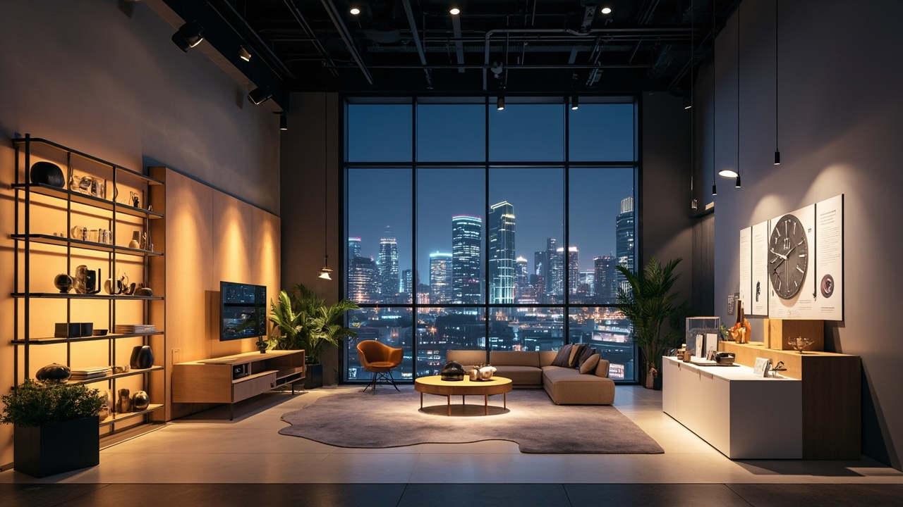

贵阳智能家居选购防坑指南（2024版）
| 作者：乐聪智能家居 | 阅读时间：8分钟
为什么贵阳业主总踩坑？
2023年我们做了个调研，贵阳地区超过70%的智能家居业主在装修完成后表示"后悔"。不是系统不好用，而是——
花了冤枉钱！
平均多花2-3万买了不必要的东西，或者买了不能用、不好用的产品。
作为一个在南昌和贵阳都有落地的智能家居集成商，我见过太多业主的血泪史。今天这篇指南，就是帮大家避坑、省钱、装对系统。

智能家居选购10大误区
误区一：贪便宜买杂牌
某宝上几百块的"智能开关"，看着便宜，实际上：
- 稳定性差，容易掉线
- 寿命短，半年就坏
- 没有售后，坏了就扔
- 协议封闭，无法扩展
正确做法：认准zigbee、thread等主流协议，选择有本地售后的品牌。
误区二：只看产品不看生态
买了10个不同品牌的产品，结果要装10个APP，手机都快爆炸了。
⚠️ 血的教训：买之前一定要问清楚，这个品牌能不能接入你想要的生态系统（苹果HomeKit、米家、天猫精灵等）。
误区三：忽略布线这个基础
装修时不注意弱电布线，等到想装智能家居时发现——没零线、没网线、没位置放设备。
必做清单：
- 每个开关底盒加一根零线
- 每个房间至少一根网线
- 弱电箱尺寸要够大（30cm×20cm以上）
- 窗帘、空调、监控位置提前布线
误区四：追求"全屋智能"概念
不是每个家庭都需要全屋智能。预算有限的情况下，先做刚需场景：
- 灯光控制（最实用）
- 窗帘控制（提升明显）
- 智能门锁（安全刚需）
- 空调控制（夏天救命）
误区五：忽视售后问题
网上买的便宜货，没两年店倒闭了，找谁售后的？
建议：选择本地有实体店的集成商，有问题能上门服务。贵阳48小时上门，南昌24小时响应，这是基本要求。
误区六：迷信进口品牌
进口品牌≠好产品。很多进口品牌在国内没有本地化服务，出了问题根本没法解决。
实际上，国产头部品牌（如迈联智家）的稳定性和性价比都很好，而且更懂中国用户需求。
误区七：只看单品价格
智能家居是系统，不是单品。单独买每个部件看起来便宜，但：
- 兼容性差，体验糟糕
- 调试困难，功能打折扣
- 出问题互相推诿
建议：选有系统整合能力的集成商，提供"设计+产品+安装+调试+售后"一站式服务。
误区八：忽视网络安全
智能设备越来越多，网络安全很重要：
- 选择支持WPA3加密的产品
- 路由器要支持MIME协议
- 定期更新固件
- 不要用默认密码
误区九：盲目追求最新技术
Matter协议很火，但目前兼容设备还不多。不建议为了Matter买一堆"期货"产品。
务实建议：选择成熟的zigbee/thread方案，等Matter生态成熟后再扩展。
误区十：自己DIY不找专业团队
智能家居涉及强电、弱电、网络、调试等多个专业，自己搞容易出安全问题。
省小钱花大钱：专业安装虽然多花几千块，但稳定性、使用体验、售后保障都强太多。
3种主流方案对比
| 方案 | 适合人群 | 预算区间 | 优点 | 缺点 |
|---|---|---|---|---|
| 米家生态 | 追求性价比、喜欢折腾的年轻人 | 1-3万（120平） | 产品丰富、价格透明、可DIY | 稳定性一般、需自己维护 |
| 苹果HomeKit | 苹果全家桶用户、追求体验 | 3-8万（120平） | 体验好、安全性高、隐私保护好 | 价格高、设备选择有限 |
| 专业集成商 | 追求稳定、不想折腾、有品质要求 | 3-15万（120平） | 稳定可靠、售后有保障、定制化 | 价格较高、依赖本地服务商 |
乐聪推荐：如果预算充足，选专业集成商方案。稳定性+售后双重保障，长期来看最划算。
贵阳本地服务商怎么选
必问的5个问题：
- 有实体店吗？能上门看样板间最好
- 做了多少年？低于3年的慎选
- 用什么系统？zigbee/thread/Matter等
- 售后怎么保障？响应时间、是否收费
- 能出具设计方案吗？免费还是收费
贵阳业主选择乐聪的理由：
- ✅ 南昌24小时、贵阳48小时上门服务
- ✅ 迈联智家AI管家，兼容200+品牌设备
- ✅ 免费上门测量，定制专属方案
- ✅ 2年免费维保，永久远程技术支持
- ✅ 成功案例：南昌/贵阳多个楼盘均有落地
常见问题FAQ
Q：旧房能不能装智能家居？
A：可以。有线方案需要重新布线，适合毛坯房；无线方案不需要布线，适合旧改。但无线稳定性略差，建议找专业团队评估。
Q：小米和华为哪个好？
A：两者定位不同。小米走性价比路线，产品丰富但质量参差；华为走高端路线，稳定性好但价格高。根据预算和需求选择。
Q：装了智能家居还能用传统开关吗？
A：可以。智能开关保留手动功能，老人小孩也能用。
Q：智能家居耗电大吗？
A：主机功耗很低（一般10W以内），主要耗电是智能设备待机。但智能空调、智能灯光可以节省10-20%电费，长期看是省钱的。
Q：信号不稳定怎么办？
A： zigbee/thread网络有中继功能，设备越多越稳定。如果面积大，提前规划mesh网络覆盖。